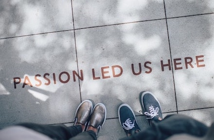

Background
I’m a web developer who loves everything about the web and what it allows human beings to acheive. I've lived all over the world, worked in lots of different jobs roles that enriched and challenged me. I’m excited to bring my life experience to the process of building fantastic looking websites and mobile applications.
In my journey I've been employed as a Digital Designer and Developer, an Infrastructure Engineer, a Teacher and yet I'm always a life-long learner striving to be better than I am. I'm actively working to expand my developer knowledge and showcase my projects so I can find employment as a full-time developer.
Goals
Currently my goal is increasing my knowledge in building highly responsive websites and mobile applications by focusing on the fundamentals within:
- HTML
- CSS
- JavaScript
- React Native
I'm looking for a developer role that allows me the freedom of working remotely a few days a week because I find I'm more productive at home. After a few years I would like to work towards a fully remote role. The ideal company would have a range of experienced developers that I can learn from, be challenged by and help teach others. I learn relatively quickly and adapt easily to working in a team or solo.